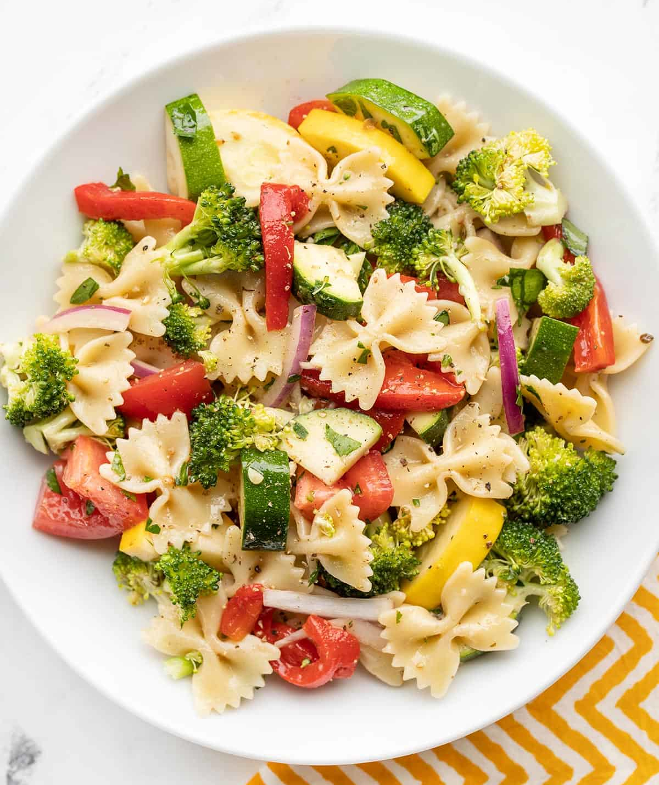

Summer Vegetable Pasta Salad

Description
This light and fresh Summer Vegetable Pasta Salad is perfect
for summer BBQs and potlucks, or your weekly meal prep.
Ingredients
- Vinaigrette
- 1/2 cup olive oil
- 1/3 cup red wine vinegar
- 1 tbsp Dijon mustard
- 1 tsp dried oregano
- 1 clove garlic, minced
- 3/4 tsp salt
- 1/4 tsp freshly cracked black pepper
- Salad
- 12 oz. bowtie pasta
- 2 Roma tomatoes
- 1 yellow squash
- 1 zucchini
- 1 broccoli crown
- 1/2 red onion
- 12 oz. roasted red peppers
- 1/2 cup chopped parsley
Steps
- Make the vinaigrette first. Whisk together the olive oil, red wine vinegar,
Dijon, oregano, minced garlic, salt, and pepper. Set the dressing aside.
- Cook the bowtie pasta according to the package directions
(boil 7-10 minutes or until tender), then drain in a colander.
Rinse briefly to cool the pasta, then let it drain well.
- While the pasta is cooking and draining, prepare the vegetables.
Chop the tomatoes, squash, zucchini, broccoli, and parsley.
Slice the roasted red peppers (drained) and the red onion.
- Place the pasta and chopped vegetables in the largest bowl you have.
Give the vinaigrette a brief whisk, then pour it over the salad.
Stir the pasta and vegetables until everything is coated in dressing.
Give it a taste and add salt or pepper, if needed. Serve immediately,
or refrigerate until ready to eat.